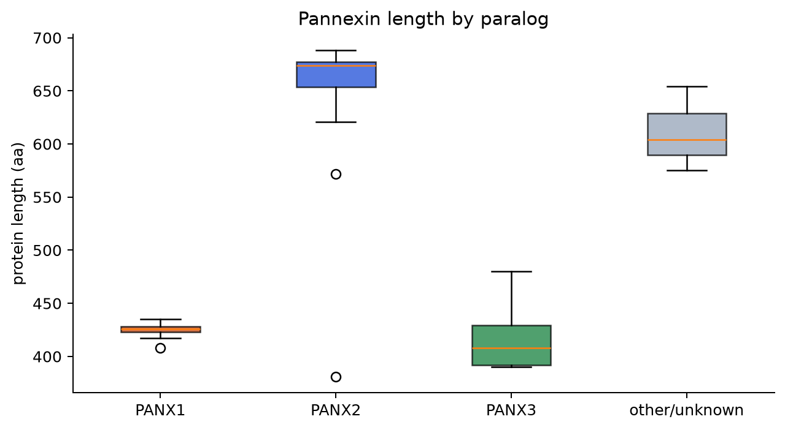
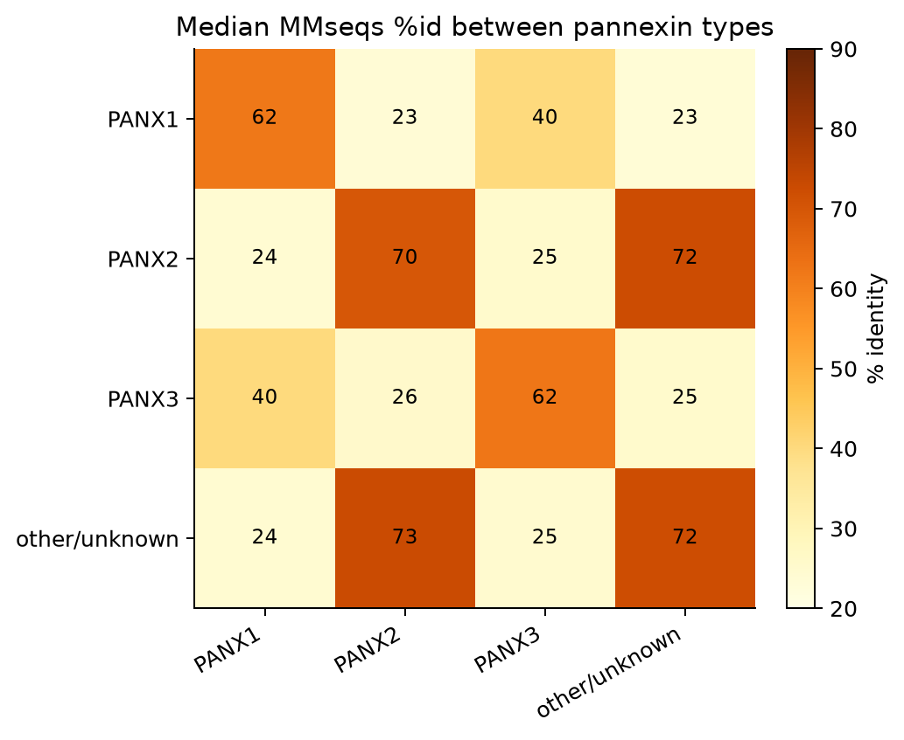
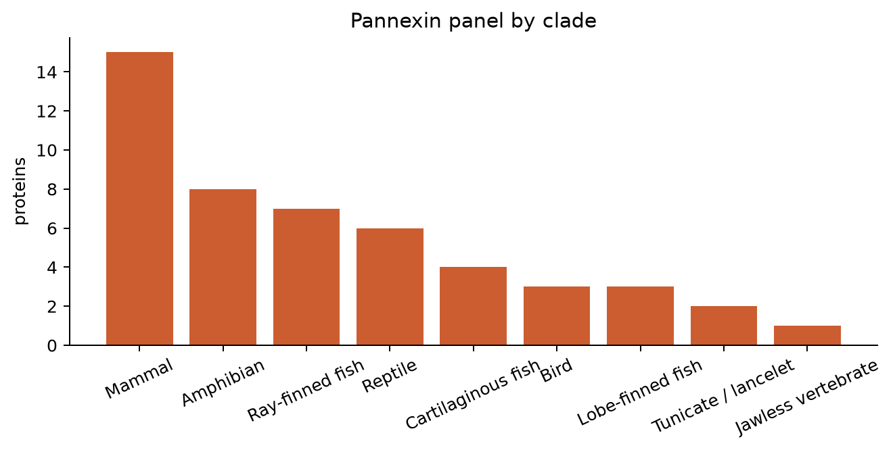

Pannexin similarity
Within-family MMseqs2 for the curated chordate/vertebrate panel (49 proteins, 17 species; 1911 off-diagonal hits at e≤1e-3).
- PANX1: 15
- PANX2: 15
- PANX3: 16
- other/unknown: 3

PANX2 is typically longer (extended C-terminus); PANX1/PANX3 cluster near ~400 aa.

Median pairwise % identity within and between paralog classes (aln ≥80 aa).

Panel composition by clade (UniProt download; false hits filtered).